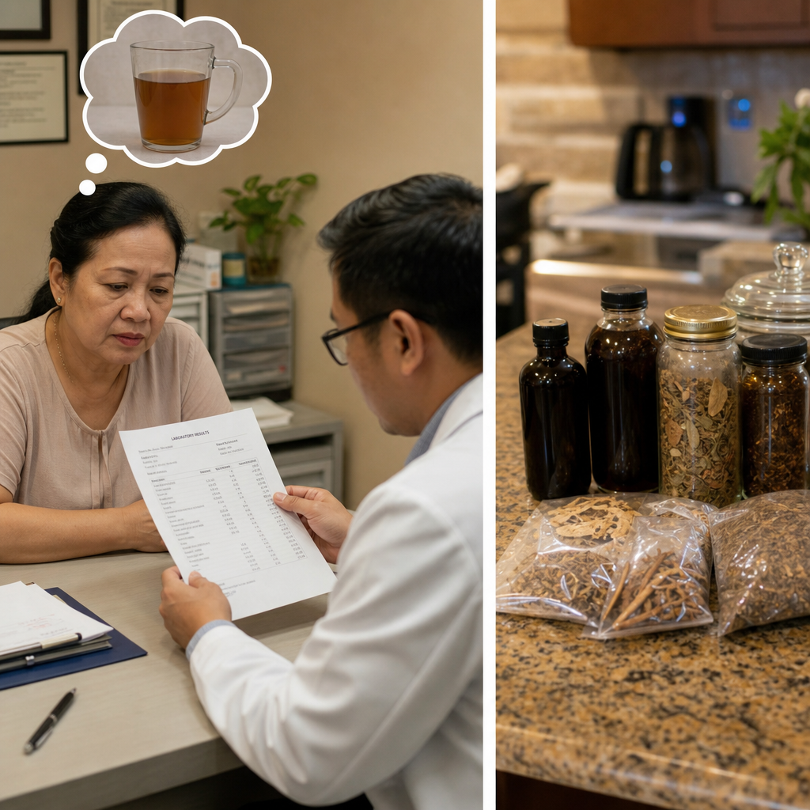
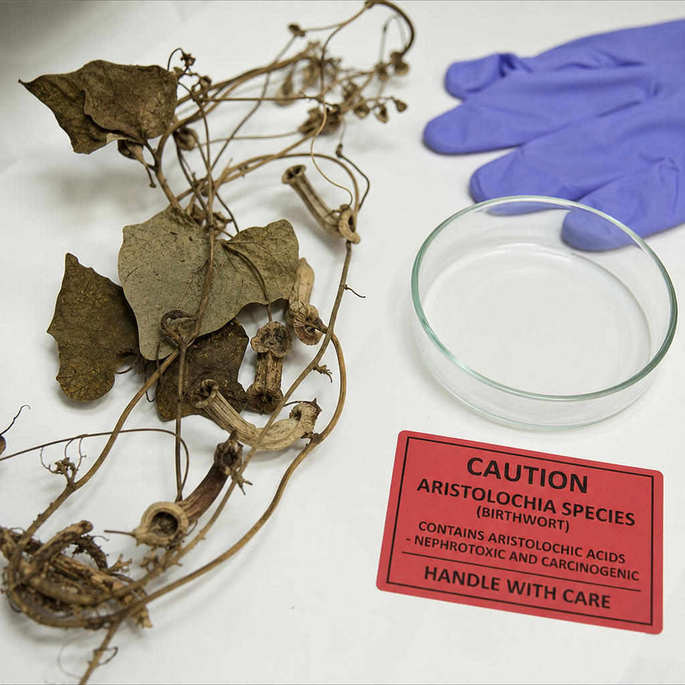
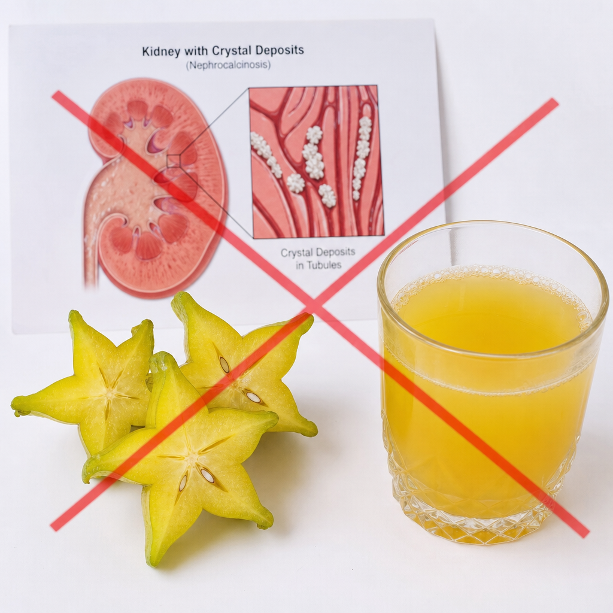
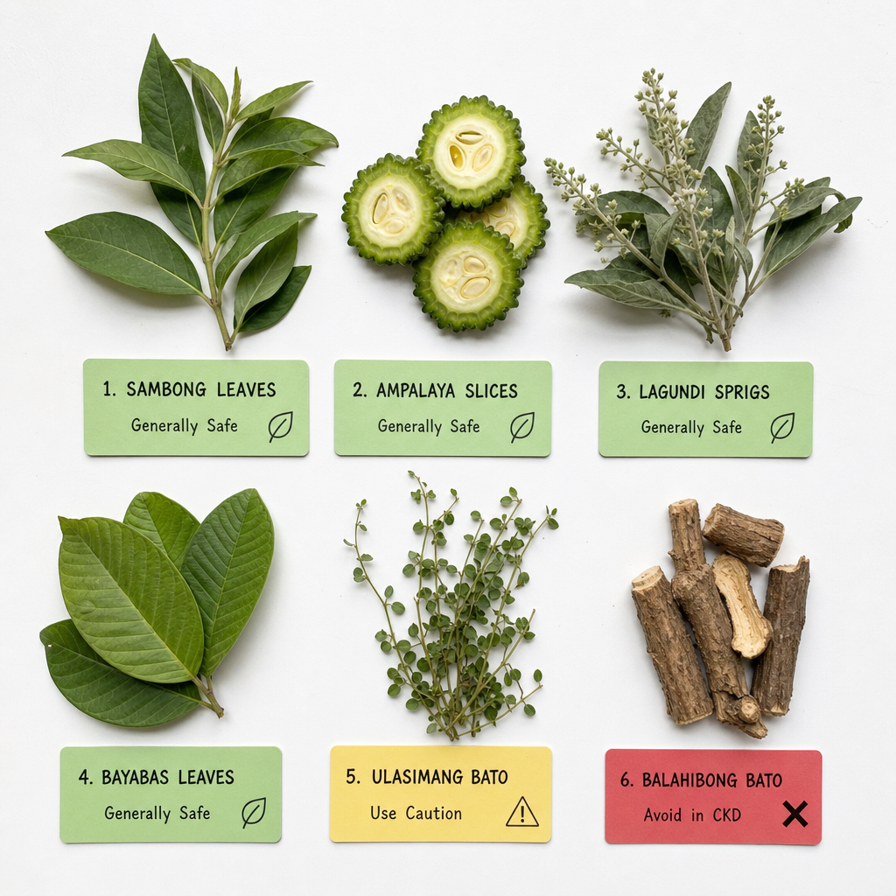
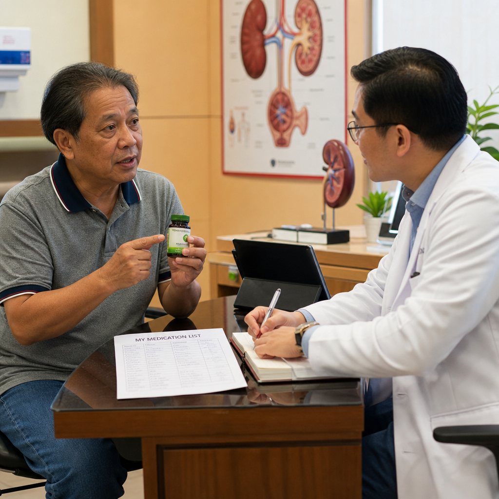

What Is Herbal Nephropathy?Ano ang Herbal Nephropathy?Unsa ang Herbal Nephropathy?Ano ing Herbal Nephropathy?
Herbal nephropathy is kidney disease caused by the consumption of plant-derived compounds, traditional medicines, or herbal supplements. It is severely underdiagnosed because patients rarely volunteer this information to doctors — and doctors rarely ask. In the Philippines, herbal medicine use is estimated at 40–70% of the population, making this a clinically urgent public health issue.Ang herbal nephropathy ay sakit sa bato na dulot ng pagkain ng mga compound na nagmula sa halaman, tradisyonal na gamot, o herbal na supplement. Ito ay lubhang hindi nasusuri dahil ang mga pasyente ay bihirang sabihin ang impormasyong ito sa mga doktor — at bihirang magtanong ang mga doktor. Sa Pilipinas, ang paggamit ng herbal na gamot ay tinatayang 40–70% ng populasyon, na ginagawa itong isang klinikalmenteng apurahang isyu sa kalusugan ng publiko.Ang herbal nephropathy sakit sa kidney nga dulot sa pagkaon sa mga compound gikan sa tanum, tradisyonal nga tambal, o herbal nga supplement. Kini grabe nga kulang sa diagnosis tungod kay ang mga pasyente bihira mag-ambit niining impormasyon sa mga doktor — ug bihira usab magtanong ang mga doktor. Sa Pilipinas, ang paggamit sa herbal nga tambal gibanabana nga 40–70% sa populasyon, nga nagbuhat niini nga usa ka klinikanhon nga maki-agawon nga isyu sa kahimsog sa publiko.Ing herbal nephropathy ya sakit sa batu na dulot nining pamangan ning deng compound na nagmula sa halaman, tradisyonal na gamut, o herbal na supplement. Ini ya lubhang ali nasusuri dahil deng pasyente ya bihirang sabihin ing impormasyong ini sa deng doktor — at bihirang magtanong deng doktor. Sa Pilipinas, ing paggamit ning herbal na gamut ya tinatayang 40–70% ning populasyon, na ginagawa ining metung a klinikalmenteng apurahang isyu sa kalusugan ning publiko.

The diagnostic gap exists because most patients do not consider herbal medicines to be "medicines" and don't mention them. Most doctors don't specifically ask. The result: a preventable cause of CKD progresses undetected.Ang agwat sa diagnosis ay umiiral dahil ang karamihang pasyente ay hindi itinuturing na "gamot" ang mga herbal na gamot at hindi ito binabanggit. Karamihang doktor ay hindi tiyak na nagtatanong. Ang resulta: isang maiiwasang sanhi ng CKD ay napapabuti nang hindi natutukoy.Ang gintang sa diagnosis naa tungod kay kadaghanan nga mga pasyente wala isipa nga "tambal" ang mga herbal nga tambal ug wala kini gisulti. Kadaghanan nga mga doktor wala espesipiko nga nagpangutana. Ang resulta: usa ka mapugngang hinungdan sa CKD nagpadayon nga wala maklaro.Ing agwat sa diagnosis ya umiiral dahil ing karamihang pasyente ya ali itinuturing na "gamut" deng herbal na gamut at ali ini binabanggit. Karamihang doktor ya ali tiyak na nagtatanong. Ing resulta: metung a maiiwasang sanhi ning CKD ya napapabuti nang ali natutukoy.
"Natural" does not mean safe for your kidneys"Natural" ay hindi nangangahulugang ligtas para sa inyong mga bato"Natural" dili pasabot nga luwas alang sa inyong mga kidney"Natural" ya ali nangangahulugang ligtas para king inyong dening batu
Many of the most potent nephrotoxins known to medicine are plant-derived. Aristolochic acid (from Aristolochia plants) is a proven human carcinogen and causes irreversible kidney fibrosis. Oxalic acid in high-oxalate herbs causes crystal nephropathy. Pyrrolizidine alkaloids cause hepatic veno-occlusive disease and secondary renal failure. The kidneys excrete virtually everything absorbed — making them uniquely vulnerable to accumulation of plant toxins.Marami sa mga pinaka-mapanganib na nephrotoxin na kilala sa medisina ay nagmumula sa mga halaman. Ang aristolochic acid (mula sa mga halaman ng Aristolochia) ay isang napatunayang human carcinogen at nagdudulot ng hindi maibabalik na kidney fibrosis. Ang oxalic acid sa mga halamang may mataas na oxalate ay nagdudulot ng crystal nephropathy. Ang pyrrolizidine alkaloids ay nagdudulot ng hepatic veno-occlusive disease at pangalawang renal failure. Ang mga bato ay nag-excrete ng halos lahat ng naiinom — na ginagawa silang natatanging mahina sa pag-iipon ng mga lason mula sa halaman.Daghang pinaka-kusog nga nephrotoxin nga nahibaloan sa medisina gikan sa mga tanum. Ang aristolochic acid (gikan sa mga tanum nga Aristolochia) napatunayan nga human carcinogen ug nagdaot sa dili na mabawi nga kidney fibrosis. Ang oxalic acid sa mga herbal nga taas ang oxalate nagdaot sa crystal nephropathy. Ang pyrrolizidine alkaloids nagdaot sa hepatic veno-occlusive disease ug ikaduhang renal failure. Ang mga kidney nag-excrete sa halos tanan nga nainom — nagbuhat kanila nga talagsaon nga dali madaot sa pag-atipon sa mga hilo sa tanum.Marami sa deng pinaka-mapanganib na nephrotoxin na kilala sa medisina ya nagmumula sa deng halaman. Ing aristolochic acid (mula sa deng halaman ning Aristolochia) ya metung a napatunayang human carcinogen at nagdudulot ning ali maibabalik na kidney fibrosis. Ing oxalic acid sa deng halamang may matas a oxalate ya nagdudulot ning crystal nephropathy. Ing pyrrolizidine alkaloids ya nagdudulot ning hepatic veno-occlusive disease at pangalawang renal failure. Dening batu ya nag-excrete ning halos lahat ning naiinom — na ginagawa silang natatanging mahina sa pag-iipon ning deng lason mula sa halaman.
How Herbal Compounds Damage the KidneyPaano Nasisira ng mga Herbal na Compound ang BatoUnsaon sa mga Herbal nga Compound Pagdaot sa KidneyPaano Nasisira ning deng Herbal na Compound ing Batu
Direct tubular toxicityDirektang tubular toxicityDirekta nga tubular toxicityDirektang tubular toxicity
Aristolochic acid and chromium compounds directly damage proximal tubule cells — the same compartment injured by aminoglycoside antibiotics. The injury causes tubular atrophy, interstitial fibrosis, and progressive nephron loss. Aristolochic acid nephropathy progresses to ESKD even after stopping the herb — the damage is often irreversible.Ang aristolochic acid at chromium compounds ay direktang sinisira ang mga proximal tubule cells — ang parehong bahagi na nasasaktan ng aminoglycoside antibiotics. Ang pinsala ay nagdudulot ng tubular atrophy, interstitial fibrosis, at progresibong pagkawala ng nephron. Ang aristolochic acid nephropathy ay nagpapatuloy sa ESKD kahit pagkatapos ihinto ang halamang gamot — ang pinsala ay madalas na hindi mababawi.Ang aristolochic acid ug chromium compounds direkta nga nagdaot sa proximal tubule cells — ang mao rang bahin nga nadaot sa aminoglycoside antibiotics. Ang kadaot nagdaot sa tubular atrophy, interstitial fibrosis, ug progresibo nga pagkawala sa nephron. Ang aristolochic acid nephropathy nagpadayon sa ESKD bisan human sa paghunong sa herbal — ang kadaot kasagaran dili na mabawi.Ing aristolochic acid at chromium compounds ya direktang sinisira deng proximal tubule cells — ing parehong bahagi na nasasaktan ning aminoglycoside antibiotics. Ing pinsala ya nagdudulot ning tubular atrophy, interstitial fibrosis, at progresibong pagkaala ning nephron. Ing aristolochic acid nephropathy ya nagpapatuloy sa ESKD kahit kapabanuan ihinto ing halamaning gamut — ing pinsala ya madalas na ali mababawi.
Crystal nephropathyCrystal nephropathyCrystal nephropathyCrystal nephropathy
High-oxalate herbs (sorrel, star fruit, rhubarb in large amounts) overwhelm the kidney's oxalate excretion capacity — calcium oxalate crystals deposit in tubules, obstruct collecting ducts, and cause acute tubular necrosis. In CKD patients, even moderate oxalate loads can cause crystal nephropathy because reduced GFR concentrates oxalate.Ang mga halamang may mataas na oxalate (sorrel, balimbing, rhubarb sa malalaking dami) ay nilalampasan ang kapasidad ng bato sa pag-excrete ng oxalate — ang calcium oxalate crystals ay nagtatago sa mga tubules, humahadlang sa mga collecting ducts, at nagdudulot ng acute tubular necrosis. Sa mga pasyenteng may CKD, kahit katamtamang load ng oxalate ay maaaring magdulot ng crystal nephropathy dahil ang nabawasang GFR ay nagtitipon ng oxalate.Ang mga herbal nga taas ang oxalate (sorrel, balimbing, rhubarb sa dagkong kantidad) nagpugos sa kapasidad sa kidney sa pag-excrete sa oxalate — ang calcium oxalate crystals nagtipon sa mga tubule, nagbabag sa collecting ducts, ug nagdaot sa acute tubular necrosis. Sa mga pasyente nga adunay CKD, bisan kasarangan nga load sa oxalate pwede magdaot sa crystal nephropathy tungod ang nabawasan nga GFR nagkonsentrar sa oxalate.Deng halamang may matas a oxalate (sorrel, balimbing, rhubarb sa malalaking dami) ya nilalampasan ing kapasidad nining batu sa pag-excrete ning oxalate — ing calcium oxalate crystals ya nagtatago sa deng tubules, humahadlang sa deng collecting ducts, at nagdudulot ning acute tubular necrosis. Sa deng pasyenteng may CKD, kahit katamtamang load ning oxalate ya maaaring magdulot ning crystal nephropathy dahil ing nabawasang GFR ya nagtitipon ning oxalate.
Immune-mediated injuryPinsalang pinaganap ng immune systemKadaot nga gipaagi sa immune systemPinsalang pinaganap ning immune system
Some herbal compounds act as haptens or directly stimulate immune responses — causing interstitial nephritis, membranous nephropathy, or IgA nephropathy. Gold-containing traditional remedies, chromium supplements, and certain Chinese herbs have been documented to cause immune-mediated glomerular disease.Ang ilang herbal na compound ay kumikilos bilang haptens o direktang nag-uudyok ng mga immune response — nagdudulot ng interstitial nephritis, membranous nephropathy, o IgA nephropathy. Ang mga tradisyonal na remedyong naglalaman ng ginto, chromium supplements, at ilang Chinese herbs ay dokumentadong nagdudulot ng immune-mediated glomerular disease.Ang pipila ka herbal nga compound naglihok isip haptens o direkta nga nagpukaw sa mga immune response — nagdaot sa interstitial nephritis, membranous nephropathy, o IgA nephropathy. Ang mga tradisyonal nga remedyo nga adunay bulawan, chromium supplements, ug pipila ka Chinese herbs dokumentado nga nagdaot sa immune-mediated glomerular disease.Ing ilang herbal na compound ya kumikilos bilang haptens o direktang nag-uudyok ning deng immune response — nagdudulot ning interstitial nephritis, membranous nephropathy, o IgA nephropathy. Deng tradisyonal na remedyong naglalaman ning ginto, chromium supplements, at ilang Chinese herbs ya dokumentadong nagdudulot ning immune-mediated glomerular disease.
Herbs and Plants That Can Damage KidneysMga Halamang Gamot at Halaman na Maaaring Makapinsala sa BatoMga Herbal ug Tanum nga Pwede Magdaot sa KidneyDeng Halamang Gamut at Halaman na Maaaring Makapinsala sa Batu
Aristolochia species (Birthwort / Snakeroot / "Guaco")Aristolochia species (Birthwort / Snakeroot / "Guaco")Aristolochia species (Birthwort / Snakeroot / "Guaco")Aristolochia species (Birthwort / Snakeroot / "Guaco")
The single most dangerous nephrotoxic herb known. Aristolochic acid causes irreversible interstitial nephritis and urothelial (bladder, ureter) cancer. The Belgian herbal slimming pill epidemic of the 1990s caused hundreds of cases of ESKD. Banned in many countries but still found in some Chinese traditional preparations. There is NO safe dose.Ang pinaka-mapanganib na nephrotoxic na halamang gamot na kilala. Ang aristolochic acid ay nagdudulot ng hindi maibabalik na interstitial nephritis at urothelial (pantog, ureter) cancer. Ang Belgian herbal slimming pill epidemic noong 1990s ay nagdulot ng daan-daang kaso ng ESKD. Ipinagbawal sa maraming bansa ngunit makikita pa rin sa ilang Chinese traditional preparations. WALANG ligtas na dosis.Ang pinaka-delikado nga nephrotoxic nga herbal nga nahibaloan. Ang aristolochic acid nagdaot sa dili mabawi nga interstitial nephritis ug urothelial (pantog, ureter) cancer. Ang Belgian herbal slimming pill epidemic sa 1990s naghimo sa gatusan ka kaso sa ESKD. Gidili sa daghang nasud apan makita pa sa pipila ka Chinese traditional preparations. WALAY luwas nga dosis.Ing pinaka-mapanganib na nephrotoxic na halamaning gamut na kilala. Ing aristolochic acid ya nagdudulot ning ali maibabalik na interstitial nephritis at urothelial (pantog, ureter) cancer. Ing Belgian herbal slimming pill epidemic noong 1990s ya nagdulot ning daan-daang kaso ning ESKD. Ipinagbawal sa dacal a bansa ngarud makikita pa rin sa ilang Chinese traditional preparations. WALANG ligtas na dosis.

Aristolochia specimens in a laboratory setting. There is NO safe dose — this plant has caused permanent kidney failure and urothelial cancer in documented cases worldwide.Mga specimen ng Aristolochia sa laboratoryo. WALANG ligtas na dosis — ang halamang ito ay nagdulot ng permanenteng pagkabigo ng bato at urothelial cancer sa mga dokumentadong kaso sa buong mundo.Mga specimen sa Aristolochia sa laboratoryo. WALAY luwas nga dosis — kining tanum nagdaot sa permanente nga pagkabigo sa kidney ug urothelial cancer sa mga dokumentadong kaso sa tibuok kalibutan.Deng specimen ning Aristolochia sa laboratoryo. WALANG ligtas na dosis — ing halamang ini ya nagdulot ning permanenteng pagkabigo nining batu at urothelial cancer sa deng dokumentadong kaso sa buong mundo.
Star Fruit (Averrhoa carambola) — BalimbingStar Fruit (Averrhoa carambola) — BalimbingStar Fruit (Averrhoa carambola) — BalimbingStar Fruit (Averrhoa carambola) — Balimbing
Star fruit contains high concentrations of oxalic acid and a neurotoxin (caramboxin). In patients with CKD Stage 3+, even 1–2 star fruits can cause acute oxalate nephropathy with AKI requiring emergency dialysis. Multiple deaths documented in dialysis patients after star fruit juice ingestion. Completely contraindicated in CKD. Seemingly minor — actually life-threatening in CKD.Ang balimbing ay naglalaman ng mataas na konsentrasyon ng oxalic acid at isang neurotoxin (caramboxin). Sa mga pasyenteng may CKD Stage 3+, kahit 1–2 na balimbing ay maaaring magdulot ng acute oxalate nephropathy na may AKI na nangangailangan ng emergency dialysis. Maraming pagkamatay ang dokumentado sa mga pasyenteng nasa dialysis pagkatapos uminom ng juice ng balimbing. Ganap na kontraindikado sa CKD. Mukhang maliit na bagay — ngunit aktwal na nagbabanta sa buhay sa CKD.Ang balimbing adunay taas nga konsentrasyon sa oxalic acid ug usa ka neurotoxin (caramboxin). Sa mga pasyente nga adunay CKD Stage 3+, bisan 1–2 ka balimbing pwede magdaot sa acute oxalate nephropathy nga adunay AKI nga nanginahanglan sa emergency dialysis. Daghang kamatayon dokumentado sa mga pasyente sa dialysis human minum sa juice sa balimbing. Hingpit nga kontraindikado sa CKD. Daw gamay lamang — apan aktwal nga nagbanta sa kinabuhi sa CKD.Ing balimbing ya naglalaman ning matas a konsentrasyon ning oxalic acid at metung a neurotoxin (caramboxin). Sa deng pasyenteng may CKD Stage 3+, kahit 1–2 na balimbing ya maaaring magdulot ning acute oxalate nephropathy na may AKI na nangangailangan ning emergency dialysis. Maraming pagkamatay ing dokumentado sa deng pasyenteng nasa dialysis kapabanuan uminom ning juice ning balimbing. Ganap na kontraindikado sa CKD. Mukhang maliit na bagay — ngarud aktwal na nagbabanta sa biye sa CKD.

Star fruit (balimbing) is completely contraindicated in CKD. Even 1–2 fruits can trigger acute kidney injury requiring emergency dialysis in Stage 3+ patients.Ang balimbing ay ganap na kontraindikado sa CKD. Kahit 1–2 na prutas ay maaaring magpasimula ng acute kidney injury na nangangailangan ng emergency dialysis sa mga pasyenteng Stage 3+.Ang balimbing hingpit nga kontraindikado sa CKD. Bisan 1–2 ka prutas pwede magpasugod sa acute kidney injury nga nanginahanglan sa emergency dialysis sa mga pasyente nga Stage 3+.Ing balimbing ya ganap na kontraindikado sa CKD. Kahit 1–2 na prutas ya maaaring magpasimula ning acute kidney injury na nangangailangan ning emergency dialysis sa deng pasyenteng Stage 3+.
Tung Shueh Pills / Chinese patent medicines containing heavy metalsTung Shueh Pills / mga Chinese patent medicine na naglalaman ng mabibigat na metalTung Shueh Pills / mga Chinese patent medicine nga adunay heavy metalsTung Shueh Pills / deng Chinese patent medicine na naglalaman ning mabibigat na metal
Traditional Chinese medicines sold as patent pills sometimes contain heavy metals as deliberate active ingredients (cinnabar = mercury sulfide; realgar = arsenic sulfide). Chronic ingestion causes heavy metal nephropathy — tubular dysfunction, proteinuria, Fanconi syndrome. Cadmium and lead contamination of herbal products from soil is an additional risk.Ang mga tradisyonal na Chinese medicine na ibinebenta bilang patent pills ay minsan ay naglalaman ng mabibigat na metal bilang sinadyang active ingredients (cinnabar = mercury sulfide; realgar = arsenic sulfide). Ang matagalang pagkain ay nagdudulot ng heavy metal nephropathy — tubular dysfunction, proteinuria, Fanconi syndrome. Ang kontaminasyon ng cadmium at tingga ng mga herbal na produkto mula sa lupa ay karagdagang panganib.Ang tradisyonal nga Chinese medicine nga gibaligya isip patent pills usahay adunay heavy metals isip tinuyo nga active ingredients (cinnabar = mercury sulfide; realgar = arsenic sulfide). Ang dugay nga pagkaon nagdaot sa heavy metal nephropathy — tubular dysfunction, proteinuria, Fanconi syndrome. Ang kontaminasyon sa cadmium ug tingga sa mga herbal nga produkto gikan sa yuta dugang risk.Deng tradisyonal na Chinese medicine na ibinebenta bilang patent pills ya misan ya naglalaman ning mabibigat na metal bilang sinadyang active ingredients (cinnabar = mercury sulfide; realgar = arsenic sulfide). Ing matagalaning pamangan ya nagdudulot ning heavy metal nephropathy — tubular dysfunction, proteinuria, Fanconi syndrome. Ing kontaminasyon ning cadmium at tingga ning deng herbal na produkto mula sa lupa ya karagdagang panganib.
Tawatawa / Euphorbia hirtaTawatawa / Euphorbia hirtaTawatawa / Euphorbia hirtaTawatawa / Euphorbia hirta
Widely used in the Philippines during dengue outbreaks. Contains tannins and compounds with documented renal tubular toxicity in animal models. While short-term use in healthy individuals may be tolerable, use in CKD patients or for prolonged periods is not recommended — the dengue-related thrombocytopenia it supposedly treats can itself cause AKI, and adding herbal nephrotoxicity worsens prognosis.Malawakang ginagamit sa Pilipinas tuwing may dengue outbreak. Naglalaman ng mga tannin at mga compound na may dokumentadong renal tubular toxicity sa mga animal models. Habang ang panandaliang paggamit sa mga malulusog na tao ay maaaring matanggap, ang paggamit sa mga pasyenteng may CKD o para sa matagal na panahon ay hindi inirerekomenda — ang dengue-related thrombocytopenia na dapat nitong gamutin ay maaari ring magdulot ng AKI, at ang pagdaragdag ng herbal nephrotoxicity ay nagpapalala ng prognosis.Kaylap nga gigamit sa Pilipinas samtang adunay dengue outbreak. Adunay mga tannin ug mga compound nga adunay dokumentadong renal tubular toxicity sa mga animal models. Samtang ang mubo nga paggamit sa mga maayong tawo mahimong matoleransyahan, ang paggamit sa mga pasyente nga adunay CKD o sa dugay nga panahon dili girekomenda — ang dengue-related thrombocytopenia nga gipaabot niyang gamuton pwede mismo magdaot sa AKI, ug ang pagdugang sa herbal nephrotoxicity nagpagrabe sa prognosis.Malawakang ginagamit king Pilipinas tuwing may dengue outbreak. Naglalaman ning deng tannin at deng compound na may dokumentadong renal tubular toxicity sa deng animal models. Habang ing panandaliang paggamit sa deng malulusog na tao ya maaaring matanggap, ing paggamit sa deng pasyenteng may CKD o para king matagal na panahon ya ali inirerekomenda — ing dengue-related thrombocytopenia na dapat nining gamutin ya maaari ring magdulot ning AKI, at ing pagdaragdag ning herbal nephrotoxicity ya nagpapalala ning prognosis.
Sorrel (Hibiscus sabdariffa) / Roselle / Gumamela TeaSorrel (Hibiscus sabdariffa) / Roselle / Tsaa ng GumamelaSorrel (Hibiscus sabdariffa) / Roselle / Tsaa sa GumamelaSorrel (Hibiscus sabdariffa) / Roselle / Tsaa ning Gumamela
High oxalic acid content. In healthy individuals, the kidneys easily excrete dietary oxalate. In CKD patients, impaired oxalate excretion leads to accumulation and calcium oxalate crystal deposition. Large amounts (multiple glasses daily) have caused AKI in CKD patients. Occasional small servings may be tolerable — but regular consumption as a "health drink" by CKD patients is inadvisable.Mataas na nilalaman ng oxalic acid. Sa mga malulusog na tao, ang mga bato ay madaling nag-excrete ng dietary oxalate. Sa mga pasyenteng may CKD, ang nasirang pag-excrete ng oxalate ay nagdudulot ng pag-iipon at calcium oxalate crystal deposition. Ang malalaking dami (maraming baso araw-araw) ay nagdulot ng AKI sa mga pasyenteng may CKD. Ang paminsan-minsang maliit na serving ay maaaring matanggap — ngunit ang regular na pagkonsumo bilang "health drink" ng mga pasyenteng may CKD ay hindi inirerekomenda.Taas nga oxalic acid. Sa mga maayong tawo, ang mga kidney dali nag-excrete sa dietary oxalate. Sa mga pasyente nga adunay CKD, ang nadaot nga pag-excrete sa oxalate nagdala sa pag-atipon ug calcium oxalate crystal deposition. Dagkong kantidad (daghang baso matag adlaw) nagdaot sa AKI sa mga pasyente nga adunay CKD. Usahay gamay nga serving mahimong matoleransyahan — apan ang regular nga konsumo isip "health drink" sa mga pasyente nga adunay CKD dili girekomendar.Mataas na nilalaman ning oxalic acid. Sa deng malulusog na tao, dening batu ya madaling nag-excrete ning dietary oxalate. Sa deng pasyenteng may CKD, ing nasirang pag-excrete ning oxalate ya nagdudulot ning pag-iipon at calcium oxalate crystal deposition. Ing malalaking dami (dacal a baso aldo-aldo) ya nagdulot ning AKI sa deng pasyenteng may CKD. Ing pamisan-misang maliit na serving ya maaaring matanggap — ngarud ing regular na pagkonsumo bilang "health drink" ning deng pasyenteng may CKD ya ali inirerekomenda.
Herbal supplements with significant drug interactions in CKDMga herbal supplement na may makabuluhang drug interactions sa CKDMga herbal supplement nga adunay importanteng drug interactions sa CKDDeng herbal supplement na may makabuluhang drug interactions sa CKD
St. John's Wort reduces blood levels of cyclosporine (organ rejection risk in transplant patients), tacrolimus, and many other drugs by CYP3A4 induction. Licorice root causes hypertension and hypokalemia — directly worsening CKD management. Ginkgo and garlic extract increase bleeding risk with anticoagulants. Always disclose all supplement use to your nephrologist.Ang St. John's Wort ay nagbabawas ng antas ng cyclosporine sa dugo (panganib ng pagtanggi sa organ sa mga pasyenteng may transplant), tacrolimus, at maraming iba pang gamot sa pamamagitan ng CYP3A4 induction. Ang licorice root ay nagdudulot ng hypertension at hypokalemia — direktang nagpapalala ng pamamahala ng CKD. Ang Ginkgo at garlic extract ay nagpapalaki ng panganib ng pagdurugo kasama ang mga anticoagulant. Laging ipahayag ang lahat ng paggamit ng supplement sa inyong nephrologist.Ang St. John's Wort nagpababa sa mga antas sa dugo sa cyclosporine (risk sa pagsalikway sa organ sa mga pasyente nga adunay transplant), tacrolimus, ug daghang uban pang gamot pinaagi sa CYP3A4 induction. Ang licorice root nagdaot sa hypertension ug hypokalemia — direkta nga nagpagrabe sa pagdumala sa CKD. Ang Ginkgo ug garlic extract nagpakadugang sa risk sa pagdugo kauban ang mga anticoagulant. Kanunay ipahayag ang tanan nga paggamit sa supplement sa inyong nephrologist.Ing St. John's Wort ya nagbabawas ning antas ning cyclosporine sa daya (panganib ning pagtanggi sa organ sa deng pasyenteng may transplant), tacrolimus, at dacal a iba paning gamut sa pamamagitan ning CYP3A4 induction. Ing licorice root ya nagdudulot ning hypertension at hypokalemia — direktang nagpapalala ning pamamahala ning CKD. Ing Ginkgo at garlic extract ya nagpapalaki ning panganib ning pagdurugo kasama deng anticoagulant. Pirming ipahayag ing lahat ning paggamit ning supplement king ka nephrologist.
Philippine Medicinal Plants — What Is KnownMga Halamang Gamot sa Pilipinas — Ang Alam NatinMga Halamang Medikal sa Pilipinas — Unsa ang NahibaloanDeng Halamang Gamut king Pilipinas — Ing Alam Natin
The Philippine Department of Health has approved 10 medicinal plants ("10 DOH Herbal Plants"). For CKD patients, here is the current evidence:Ang Kagawaran ng Kalusugan ng Pilipinas ay nag-apruba ng 10 na halamang gamot ("10 DOH Herbal Plants"). Para sa mga pasyenteng may CKD, narito ang kasalukuyang ebidensya:Ang Kagawaran sa Kalusugan sa Pilipinas nag-aprubahan sa 10 nga halamang medikal ("10 DOH Herbal Plants"). Alang sa mga pasyente nga adunay CKD, ania ang kasamtangang ebidensya:Ing Kagawaran ning Kalusugan ning Pilipinas ya nag-apruba ning 10 na halamaning gamut ("10 DOH Herbal Plants"). Para king deng pasyenteng may CKD, narini ing kasalukuyang ebidensya:

DOH-approved Philippine medicinal plants with CKD safety assessments. Green = generally safe with disclosure; yellow = use with caution; red = avoid in CKD. Always inform your nephrologist of any herbal product you use.Mga halamang gamot na aprubado ng DOH na may mga pagtatasa ng kaligtasan sa CKD. Berde = sa pangkalahatan ay ligtas na may pagbubunyag; dilaw = gamitin nang may pag-iingat; pula = iwasan sa CKD. Laging ipaalam sa inyong nephrologist ang anumang herbal na produktong ginagamit ninyo.Mga halamang medikal nga aprubahan sa DOH nga adunay mga pagtimbang-timbang sa kaligtasan sa CKD. Berde = sa kinatibuk-an luwas nga adunay pagbunyag; dilaw = gamiton nga may pag-amping; pula = likayi sa CKD. Kanunay ipahibalo sa inyong nephrologist ang bisan unsang herbal nga produkto nga inyong gigamit.Deng halamaning gamut na aprubado ning DOH na may deng pagtatasa ning kaligtasan sa CKD. Berde = sa pangkalahatan ya ligtas na may pagbubunyag; dilaw = gamitin nang may pag-iingat; pula = iwasan sa CKD. Pirming ipaalam king ka nephrologist ing anumang herbal na produktong ginagamit ninyo.
| PlantHalamanTanumHalaman | Common useKaraniwang gamitKasagarang gamitKaraniwang gamit | CKD concernAlalahanin sa CKDKabalaka sa CKDAlalahanin sa CKD | VerdictHatolDesisyonHatol |
|---|---|---|---|
| Sambong (Blumea balsamifera)Sambong (Blumea balsamifera)Sambong (Blumea balsamifera)Sambong (Blumea balsamifera) | Kidney stones, diureticBato sa bato, diureticBato sa kidney, diureticBatu sa batu, diuretic | Generally considered safe; some diuretic effect may affect fluid/electrolyte balance in CKDSa pangkalahatan ay itinuturing na ligtas; ang ilang diuretic na epekto ay maaaring makaapekto sa fluid/electrolyte balance sa CKDSa kinatibuk-an giisip nga luwas; ang ubang diuretic nga epekto pwede makaapekto sa fluid/electrolyte balance sa CKDSa pangkalahatan ya itinuturing na ligtas; ing ilang diuretic na epekto ya maaaring makaapekto sa fluid/electrolyte balance sa CKD | Use with caution; inform nephrologistGamitin nang may pag-iingat; ipaalam sa nephrologistGamiton nga may pag-amping; ipahibalo sa nephrologistGamitin nang may pag-iingat; ipaalam sa nephrologist |
| Ampalaya (Bitter melon)Ampalaya (Bitter melon)Ampalaya (Bitter melon)Ampalaya (Bitter melon) | Diabetes/blood sugarDiyabetes/asukal sa dugoDiyabetes/asukar sa dugoDiyabetes/asukal sa daya | May enhance hypoglycemic effect of diabetes medications — risk of hypoglycemia. Limited nephrotoxicity dataMaaaring palakasin ang hypoglycemic na epekto ng mga gamot sa diyabetes — panganib ng hypoglycemia. Limitadong data sa nephrotoxicityPwede mapalakas ang hypoglycemic nga epekto sa mga tambal sa diyabetes — risk sa hypoglycemia. Limitado nga datos sa nephrotoxicityMaaaring palakasin ing hypoglycemic na epekto ning dening gamut sa diyabetes — panganib ning hypoglycemia. Limitadong data sa nephrotoxicity | Inform doctor if using; monitor blood sugar closelyIpaalam sa doktor kung gumagamit; bantayan nang mabuti ang asukal sa dugoIpahibalo sa doktor kon gamiton; bantayan pag-ayo ang asukar sa dugoIpaalam sa doktor nung gumagamit; bantayan nang mabuti ing asukal sa daya |
| Lagundi (Vitex negundo)Lagundi (Vitex negundo)Lagundi (Vitex negundo)Lagundi (Vitex negundo) | Cough, feverUbo, lagnatUbo, hilanatUbo, lagnat | Limited data in CKD. Short-course use for acute symptoms appears low risk in non-advanced CKDLimitadong data sa CKD. Ang maikling paggamit para sa acute na sintomas ay tila mababa ang panganib sa hindi advanced na CKDLimitado nga datos sa CKD. Ang mubo nga paggamit alang sa acute nga sintomas daw mubo ang risk sa dili advanced nga CKDLimitadong data sa CKD. Ing maikling paggamit para king acute na sintomas ya tila mababa ing panganib sa ali advanced na CKD | Short-term use likely acceptable; avoid chronic useAng panandaliang paggamit ay malamang katanggap-tanggap; iwasan ang matagalang paggamitAng mubo nga paggamit lagmit katanggap-tanggap; likayi ang dugay nga paggamitIng panandaliang paggamit ya malamang katanggap-tanggap; iwasan ing matagalang paggamit |
| Bayabas (Guava leaf)Bayabas (dahon ng guava)Bayabas (dahon sa guava)Bayabas (dahon ning guava) | Wound healing, diarrheaPagpapagaling ng sugat, pagtataePagayo sa samad, pagtataePagpapagaling ning sugat, pagtatae | High tannin content — chronic ingestion may affect kidney function. Topical use is safeMataas na nilalaman ng tannin — ang matagalang pagkain ay maaaring makaapekto sa paggana ng bato. Ang topical na paggamit ay ligtasTaas nga tannin — ang dugay nga pagkaon pwede makaapekto sa gimbuhaton sa kidney. Ang topical nga paggamit luwasMataas na nilalaman ning tannin — ing matagalaning pamangan ya maaaring makaapekto sa paggana nining batu. Ing topical na paggamit ya ligtas | Topical use safe; avoid ingesting large quantitiesAng topical na paggamit ay ligtas; iwasan ang pagkain ng malalaking damiAng topical nga paggamit luwas; likayi ang pagkaon sa dagkong kantidadIng topical na paggamit ya ligtas; iwasan ining pamangan ning malalaking dami |
| Niyog-niyogan (Quisqualis)Niyog-niyogan (Quisqualis)Niyog-niyogan (Quisqualis)Niyog-niyogan (Quisqualis) | Intestinal parasitesMga parasito sa bitukaMga parasito sa tinaiDeng parasini sa bituka | Seeds contain quisqualic acid — high doses associated with neurotoxicity; renal excretion impaired in CKDAng mga buto ay naglalaman ng quisqualic acid — ang mataas na dosis ay kaugnay ng neurotoxicity; ang renal excretion ay may kapansanan sa CKDAng mga binhi adunay quisqualic acid — ang taas nga dosis nalambigit sa neurotoxicity; ang renal excretion nadaot sa CKDDeng buto ya naglalaman ning quisqualic acid — ing matas a dosis ya kaugnay ning neurotoxicity; ing renal excretion ya may kapansanan sa CKD | Avoid in CKD; use physician-prescribed antihelminthicsIwasan sa CKD; gumamit ng mga antihelminthic na inireseta ng doktorLikayi sa CKD; gamiton ang antihelminthic nga gireseta sa doktorIwasan sa CKD; gumamit ning deng antihelminthic na inireseta ning doktor |
| Ulasimang bato / Pansit-pansitanUlasimang bato / Pansit-pansitanUlasimang bato / Pansit-pansitanUlasimaning batu / Pansit-pansitan | Gout, uric acidGout, uric acidGout, uric acidGout, uric acid | Some evidence of uricosuric effect. Interactions with allopurinol/febuxostat not establishedIlang ebidensya ng uricosuric na epekto. Ang mga pakikipag-ugnayan sa allopurinol/febuxostat ay hindi pa naitatagUbang ebidensya sa uricosuric nga epekto. Ang mga interaksyon sa allopurinol/febuxostat wala pa matukodIlang ebidensya ning uricosuric na epekto. Deng pakikipag-ugnayan sa allopurinol/febuxostat ya ali pa naitatag | Inform nephrologist; do not substitute for prescribed urate-lowering therapyIpaalam sa nephrologist; huwag palitan ang inireseta na urate-lowering therapyIpahibalo sa nephrologist; ayaw ilisan ang gireseta nga urate-lowering therapyIpaalam sa nephrologist; eka palitan ing inireseta na urate-lowering therapy |
| Tsaang gubatTsaang gubatTsaang gubatTsaang gubat | Stomachache, diarrheaSakit ng tiyan, pagtataeSakit sa tiyan, pagtataeSakit ning tiyan, pagtatae | Limited nephrotoxicity data. Contains tannins — chronic use uncharacterizedLimitadong data sa nephrotoxicity. Naglalaman ng mga tannin — ang matagalang paggamit ay hindi pa nailalarawanLimitado nga datos sa nephrotoxicity. Adunay mga tannin — ang dugay nga paggamit wala pa makasabutLimitadong data sa nephrotoxicity. Naglalaman ning deng tannin — ing matagalang paggamit ya ali pa nailalaldoan | Avoid in CKD without physician guidanceIwasan sa CKD nang walang gabay ng doktorLikayi sa CKD kon wala giya sa doktorIwasan sa CKD nang alang gabay ning doktor |
| Akapulko (Cassia alata)Akapulko (Cassia alata)Akapulko (Cassia alata)Akapulko (Cassia alata) | Skin fungal infectionsMga impeksyong fungal sa balatMga fungal nga impeksyon sa panitDeng impeksyong fungal sa balat | Topical use only — limited systemic absorption. Ingestion not recommendedTopical na paggamit lamang — limitadong sistematikong pagsipsip. Hindi inirerekomenda ang pagkainTopical nga paggamit lamang — limitado nga sistematiko nga pagsuyop. Dili girekomenda ang pagkaonTopical na paggamit lamang — limitadong sistematikong pagsipsip. Ali inirerekomenda ining pamangan | Topical use safe; do not ingestAng topical na paggamit ay ligtas; huwag kaininAng topical nga paggamit luwas; ayaw kaononIng topical na paggamit ya ligtas; eka kainin |
Over-the-Counter Supplements — CKD RisksMga Over-the-Counter na Supplement — Mga Panganib sa CKDMga Over-the-Counter nga Supplement — Mga Risk sa CKDDeng Over-the-Counter na Supplement — Deng Panganib sa CKD
Vitamin C — the dose mattersVitamin C — ang dosis ay mahalagaVitamin C — ang dosis importanteVitamin C — ing dosis ya mahalaga
Vitamin C above 500–1,000 mg/day is metabolized to oxalate — directly worsening oxalate nephropathy risk in CKD. Many Filipinos take 1,000–2,000 mg Vitamin C daily as immune support. In CKD, limit to 60–100 mg/day (dietary sources sufficient). Avoid high-dose Vitamin C supplements entirely in Stage 3b+ CKD.Ang Vitamin C na higit sa 500–1,000 mg/araw ay nametabolismo sa oxalate — direktang nagpapalala ng panganib ng oxalate nephropathy sa CKD. Maraming Pilipino ang kumukuha ng 1,000–2,000 mg Vitamin C araw-araw bilang suporta sa immune system. Sa CKD, limitahan sa 60–100 mg/araw (sapat na ang mga pinagkukunan sa pagkain). Iwasan ang mataas na dosis ng Vitamin C supplements nang ganap sa Stage 3b+ CKD.Ang Vitamin C nga labaw sa 500–1,000 mg/adlaw gimetabolismo sa oxalate — direkta nga nagpagrabe sa risk sa oxalate nephropathy sa CKD. Daghang Pilipino nagkuha sa 1,000–2,000 mg Vitamin C matag adlaw isip suporta sa immune. Sa CKD, limitahan sa 60–100 mg/adlaw (saktong ang mga tinubdan sa pagkaon). Likayi ang taas nga dosis sa Vitamin C supplements sa tibuok sa Stage 3b+ CKD.Ing Vitamin C na higit sa 500–1,000 mg/aldo ya nametabolismo sa oxalate — direktang nagpapalala ning panganib ning oxalate nephropathy sa CKD. Maraming Pilipino ing kumukuha ning 1,000–2,000 mg Vitamin C aldo-aldo bilang suporta sa immune system. Sa CKD, limitahan sa 60–100 mg/aldo (sapat na deng pinagkukunan king pamangan). Iwasan ing matas a dosis ning Vitamin C supplements nang ganap sa Stage 3b+ CKD.
Chromium picolinateChromium picolinateChromium picolinateChromium picolinate
Sold for blood sugar control and weight loss. Chromium is renally excreted and accumulates in CKD. Chromium toxicity causes tubular dysfunction, proteinuria, and oxidative stress. FDA has not established a safe upper limit for chromium supplementation — especially hazardous in CKD patients.Ibinebenta para sa kontrol ng asukal sa dugo at pagbabawas ng timbang. Ang chromium ay renally na itinapon at naiimbak sa CKD. Ang chromium toxicity ay nagdudulot ng tubular dysfunction, proteinuria, at oxidative stress. Hindi pa nagtakda ang FDA ng ligtas na limitasyon sa itaas para sa chromium supplementation — lalo na mapanganib sa mga pasyenteng may CKD.Gibaligya alang sa kontrol sa asukar sa dugo ug pagkawala sa timbang. Ang chromium renally na gi-excrete ug nag-atipon sa CKD. Ang chromium toxicity nagdaot sa tubular dysfunction, proteinuria, ug oxidative stress. Wala pa nagtukod ang FDA sa luwas nga upper limit alang sa chromium supplementation — labi na mapanganib sa mga pasyente nga adunay CKD.Ibinebenta para king kontrol ning asukal sa daya at pagbabawas ning timbang. Ing chromium ya renally na itinapon at naiimbak sa CKD. Ing chromium toxicity ya nagdudulot ning tubular dysfunction, proteinuria, at oxidative stress. Ali pa nagtakda ing FDA ning ligtas na limitasyon sa itaas para king chromium supplementation — lalo na mapanganib sa deng pasyenteng may CKD.
High-protein powders and amino acid supplementsMga high-protein powder at amino acid supplementMga high-protein powder ug amino acid supplementDeng high-protein powder at amino acid supplement
Protein supplements increase protein load — directly raising BUN and increasing CKD progression risk in pre-dialysis patients. Whey protein, branched-chain amino acids, creatine monohydrate all increase urea nitrogen generation. Contraindicated in CKD Stage 3+ without specific guidance from a renal dietitian.Ang mga protein supplement ay nagpapataas ng protein load — direktang nagpapataas ng BUN at nagpapataas ng panganib ng pagsulong ng CKD sa mga pre-dialysis na pasyente. Ang whey protein, branched-chain amino acids, creatine monohydrate ay nagpapataas ng urea nitrogen generation. Kontraindikado sa CKD Stage 3+ nang walang tiyak na gabay mula sa isang renal dietitian.Ang mga protein supplement nagpakadugang sa protein load — direkta nga nagpataas sa BUN ug nagpakadugang sa risk sa pag-uswag sa CKD sa mga pre-dialysis nga pasyente. Ang whey protein, branched-chain amino acids, creatine monohydrate tanan nagpakadugang sa urea nitrogen generation. Kontraindikado sa CKD Stage 3+ kon wala espesipiko nga giya gikan sa renal dietitian.Deng protein supplement ya nagpapataas ning protein load — direktang nagpapataas ning BUN at nagpapataas ning panganib ning pagsulong ning CKD sa deng pre-dialysis na pasyente. Ing whey protein, branched-chain amino acids, creatine monohydrate ya nagpapataas ning urea nitrogen generation. Kontraindikado sa CKD Stage 3+ nang alang tiyak na gabay mula sa metung a renal dietitian.
Warning Signs That a Herbal Remedy May Be Harming Your KidneysMga Palatandaan ng Babala na Maaaring Nasasaktan ang Inyong mga Bato ng Isang Halamang GamotMga Timailhan sa Pasidaan nga Mahimong Gisamad sa Usa ka Herbal ang Inyong mga KidneyDeng Palatandaan ning Babala na Maaaring Nasasaktan ing Inyong deng Batu ning Isang Halamang Gamut
Seek medical attention promptly if you notice these after starting any herbal remedy:Humingi kaagad ng medikal na atensyon kung mapansin ninyo ang mga ito pagkatapos magsimula ng anumang halamang gamot:Pangitaa dayon ang medikal nga atensyon kon mamatikdan ninyo kini human sa pagsugod sa bisan unsang herbal nga remedyo:Humingi kaagad ning medikal na atensyon nung mapansin ninyo deng ini kapabanuan magsimula ning anumang halamaning gamut:
- Sudden decrease in urine output or dark/foamy urineBiglaang pagbaba ng output ng ihi o madilim/makulong na ihiKalit nga pagkunhod sa output sa ihi o ngitngit/bulobulo nga ihiBiglaang pagbaba ning output ning ihi o madilim/makulong na ihi
- Swelling of feet, legs, or face that is new or worseningPamamaga ng paa, binti, o mukha na bago o lumalalaPamamaga sa tiil, bitiis, o nawong nga bag-o o nagpagrabePamamaga ning paa, binti, o mukha na bago o lumalala
- Rapid weight gain (more than 1 kg per day) from fluid retentionMabilis na pagtaas ng timbang (higit sa 1 kg bawat araw) mula sa pagtitipon ng tubigKusog nga pagtaas sa timbang (labaw sa 1 kg matag adlaw) gikan sa pag-atipon sa tubigMabilis na pagtaas ning timbang (higit sa 1 kg bawat aldo) mula sa pagtitipon nining danum
- Unusual fatigue, weakness, or difficulty breathingHindi pangkaraniwang pagod, kahinaan, o kahirapan sa paghingaDili kasagarang kakapoy, kahuyang, o kalisod sa pagginhawaAli pangkaraniwang pagod, kahinaan, o kahirapan sa paghinga
- Back or flank pain (kidney area)Sakit sa likod o gilid (lugar ng bato)Sakit sa likod o kilid (lugar sa kidney)Sakit sa likod o gilid (lugar nining batu)
- Nausea, vomiting, or loss of appetite (uremic symptoms)Pagduduwal, pagsusuka, o kawalan ng gana sa pagkain (mga sintoma ng uremic)Pagkahilo, pagsuka, o pagkawala sa gana sa pagkaon (mga sintoma sa uremic)Pagduduwal, pagsusuka, o kaalan ning gana king pamangan (mga sintoma ning uremic)
- Rising creatinine or worsening eGFR on routine labs after starting a new supplementPagtaas ng creatinine o pagbaba ng eGFR sa mga routine na lab pagkatapos magsimula ng bagong supplementPagtaas sa creatinine o pagpagrabe sa eGFR sa mga routine nga lab human sa pagsugod sa bag-ong supplementPagtaas ning creatinine o pagbaba ning eGFR sa deng routine na lab kapabanuan magsimula ning bagong supplement
Safer Alternatives and What to Tell Your DoctorMas Ligtas na mga Alternatibo at Ano ang Sasabihin sa Inyong DoktorMas Luwas nga mga Alternatibo ug Unsa ang Isulti sa Inyong DoktorMas Ligtas na deng Alternatibo at Ano ing Sasabihin sa Inyong Doktor

Open disclosure enables protection. Bring every supplement, herbal tea, and traditional medicine to your nephrologist — there is no judgment, only better care.Ang bukas na pagbubunyag ay nagbibigay-daan sa proteksyon. Dalhin ang bawat supplement, herbal na tsaa, at tradisyonal na gamot sa inyong nephrologist — walang paghuhusgaP, mas mabuting pag-aalaga lamang.Ang bukas nga pagbunyag naghatag sa proteksyon. Dad-on ang matag supplement, herbal nga tsaa, ug tradisyonal nga tambal sa inyong nephrologist — walay paghukom, mas maayong pag-atiman lamang.Ing bukas na pagbubunyag ya nagbibigay-daan sa proteksyon. Dalhin ing bawat supplement, herbal na tsaa, at tradisyonal na gamut king ka nephrologist — alang paghuhusgaP, mas mabuting pag-aalaga lamang.
Always disclose all supplementsLaging ipahayag ang lahat ng supplementKanunay ipahayag ang tanan nga supplementPirming ipahayag ing lahat ning supplement
Create a complete list of everything you take — including herbal teas, food supplements, vitamins, minerals, tinctures, and traditional preparations. Bring this list to every medical appointment. Your nephrologist cannot protect your kidneys from something they don't know you're taking. There is no judgment — disclosure enables protection.Gumawa ng kumpletong listahan ng lahat ng inyong kinukuha — kasama ang mga herbal na tsaa, food supplement, bitamina, mineral, tincture, at mga tradisyonal na paghahanda. Dalhin ang listahang ito sa bawat medikal na appointment. Hindi mapoprotektahan ng inyong nephrologist ang inyong mga bato mula sa isang bagay na hindi nila alam na inyong kinukuha. Walang paghuhusgaP — ang pagbubunyag ay nagbibigay-daan sa proteksyon.Maghimo sa kompleto nga listahan sa tanan nga inyong giinom — lakip ang mga herbal nga tsaa, food supplement, bitamina, mineral, tincture, ug mga tradisyonal nga paghanda. Dad-on kining listahan sa matag medikal nga appointment. Dili maprotektahan sa inyong nephrologist ang inyong mga kidney gikan sa usa ka butang wala nila mahibaloi nga inyong giinom. Walay paghukom — ang pagbunyag naghatag sa proteksyon.Gumawa ning kumpletong listahan ning lahat ning inyong kinukuha — kasama deng herbal na tsaa, food supplement, bitamina, mineral, tincture, at deng tradisyonal na paghahanda. Dalhin ing listahang ini king bawat medikal na appointment. Ali mapoprotektahan ning inyong nephrologist ing inyong dening batu mula sa metung a bagay na ali nila alam na inyong kinukuha. Alang paghuhusgaP — ing pagbubunyag ya nagbibigay-daan sa proteksyon.
Evidence-based integrative optionsMga integrative na opsyon batay sa ebidensyaMga integrative nga opsyon batay sa ebidensyaDeng integrative na opsyon batay sa ebidensya
Some supplements have genuine evidence of benefit in CKD and are safe when used correctly: Omega-3 fatty acids (Omacor) for triglycerides and proteinuria, Renadyl probiotics for uremic toxin reduction, Psyllium husk for gut microbiome and toxin clearance, Sodium bicarbonate for metabolic acidosis. These should always be discussed with and supervised by your nephrologist.Ang ilang mga supplement ay may tunay na ebidensya ng benepisyo sa CKD at ligtas kapag ginamit nang tama: Omega-3 fatty acids (Omacor) para sa triglycerides at proteinuria, Renadyl probiotics para sa pagbabawas ng uremic toxin, Psyllium husk para sa gut microbiome at pag-aalis ng toxin, Sodium bicarbonate para sa metabolic acidosis. Ang mga ito ay dapat palaging talakayin at pangalagaan ng inyong nephrologist.Ang pipila ka supplement adunay tinuod nga ebidensya sa benepisyo sa CKD ug luwas kon gamiton sa husto: Omega-3 fatty acids (Omacor) alang sa triglycerides ug proteinuria, Renadyl probiotics alang sa pagkunhod sa uremic toxin, Psyllium husk alang sa gut microbiome ug pagtangtang sa toxin, Sodium bicarbonate alang sa metabolic acidosis. Kini kanunay kinahanglang hisgotan ug gipanabang sa inyong nephrologist.Ing ildeng supplement ya may tunay na ebidensya ning benepisyo sa CKD at ligtas nung ginamit nang tama: Omega-3 fatty acids (Omacor) para king triglycerides at proteinuria, Renadyl probiotics para king pagbabawas ning uremic toxin, Psyllium husk para king gut microbiome at pag-aalis ning toxin, Sodium bicarbonate para king metabolic acidosis. Deng ini ya dapat papirming talakayin at pangalagaan ning inyong nephrologist.

W. G. M. Rivero, MD, FPCP, DPSN
Specialist in Internal Medicine, Nephrology, and Clinical Nutrition. Integrative and evidence-based approach to kidney disease management.Espesyalista sa Internal Medicine, Nephrology, at Clinical Nutrition. Integrative at evidence-based na diskarte sa pamamahala ng sakit sa bato.Espesyalista sa Internal Medicine, Nephrology, ug Clinical Nutrition. Integrative ug evidence-based nga pamaagi sa pagdumala sa sakit sa kidney.Espesyalista sa Internal Medicine, Nephrology, at Clinical Nutrition. Integrative at evidence-based na diskarte sa pamamahala nining sakit sa batu.
PRC 0105184 · seriousmd.com/doc/williamrivero